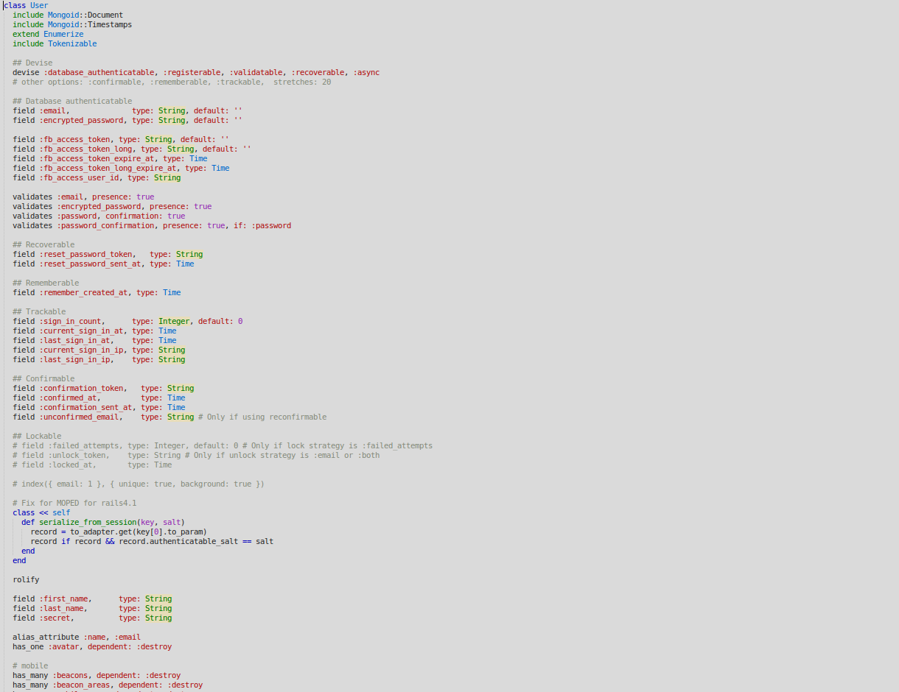
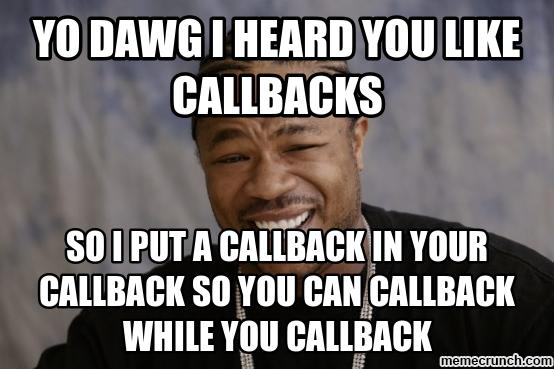
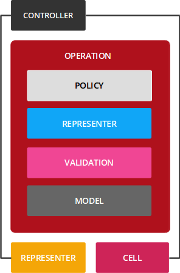

POOP - Poor Object Oriented Programming Programmers
Maciej Mensfeld
twitter: @maciejmensfeld
www: mensfeld.pl
e-mail: maciej@mensfeld.pl
A bit about me
- I'm from Poland
- 10 years of commercial exp in IT
- 8 years mostly with Ruby and Rails
- I love and do open-source (karafka)
- Interested in quality-assurance automation and software architecture
- KRUG organizer
- Conference speaker
- Former PK student :-)
Please notify me if...
- I speak 2 fast
- I should repeat something
- I should explain something better
- You have any questions
I will be talking mostly in the Ruby context but the same applies to any other OOP language

In the end, all of it is just (more or less) OOP
Basics
- OOP comes from software that runs simulations
- programs = objects + classes + inheritance
- programs = objects + messages
Basics
- Inheritance - a way to reuse code of existing objects, or to establish a subtype from an existing object
- Encapsulation - the art of hiding of data implementation by restricting access to accessors and mutators.
- Polymorphism - Fruit can be eaten, as a general rule, but different types of fruit is eaten in different ways.
- Abstraction - Data abstraction is nothing more than the implementation of an object that contains the same essential properties and actions we can find in the original object we are representing.
A bit of history and stuff
- Object-oriented programming (OOP) is a programming paradigm based on the concept of "objects"
- They may contain data (attributes) and code (methods)
- Objects have a notion of "this" or "self"
- In OOP, computer programs are designed by making them out of objects that interact with one another.
A bit of history and stuff
- It's been with us from early 1970
- "Object Oriented" by Alan Kay
- 1980s - Smalltalk
- 1980s - Hype Driven Development for OOP
- 1990s - Boom on Java, PHP, C++, Ruby and so on...
A bit of history and stuff
- Gang of Four design patterns
- ORMs (Object-Relational Mapping)
SOLID base
- Single responsibility principle - every module or class should have responsibility over a single part of the functionality
- Open/closed principle - open for extension, but closed for modification
- Liskov substitution principle - if S is a subtype of T, then objects of type T may be replaced with objects of type S
SOLID base
- Interface segregation principle - no client should be forced to depend on methods it does not use.
- Dependency inversion principle - High-level modules should not depend on low-level modules. Both should depend on abstractions.
But do people undestand and use this?
It all sounds great!
So, what's wrong with Object Oriented Programming?
"I made up the term 'object-oriented', and I can tell you I didn't have C++ in mind"
Alan Kay
OOP promises graceful transition from domain models to implementation
Instead we have tons of unrelated technologies and patterns in a single project
(xml, json, ruby, css, js, typescript, sql, nosql, ..)
One of the key features of OOP (in 1980s) was the possibility to use it from domain modelling through analysis and design down to the implementation
Code often does not represent a current state but a whole history of transformations of the business behind it
Developers spend more time reading than writing
OOP code often does not reflect runtime behaviours so you have to play with it
Software changes but there aren't many mechanisms that enable changes for OOP ecosystems
Coding is not modeling
Not always possible to map reality 1 to 1 with the code (software languages limitations, etc)
Everything is overused...
Inheritance is overused

The Fragile Base Class Problem
Encapsulation is overused
The Reference Problem
Objects are passed to functions NOT by their value but by reference.
ORMs play nicely with OOP, right?
As long as you're a system God
Try to use ORM to integrate with a preexisting 500 tables SQL based DBORMs play nicely with OOP, right?
Instead of modelling data you just match it with objects
And this happens for SQL databases that aren't object orientedOOP data type definitions are spread out all over the place
Objects have private states
State is the root of all evil. In particular when combined with functions with side effectsEverything has to be an object
In an OO language “time” has to be an object. But in a non OO language a “time” is a instance of a data type.Data structures and functions should not be bound together
Since functions and data structures are completely different types of animals it is fundamentally incorrect to lock them up in the same cage.Test case time
What's wrong with MVC the way it is?

The way almost all MVC frameworks are being taught
- The "Rails" way is the best way
- Fat models
- Slim controllers
- Models to rule it all
- It's supposed to be object oriented programming - so let's make models validate themselfs
- States, everywhere states
- It can happen even if you don't know about it (callbacks)
You need a framework to program in a given language
# Gemfile
source 'https://rubygems.org'
gem 'rails', '5.0.1'
%w(
rails
active_model/railtie
active_job/railtie
active_record/railtie
action_controller/railtie
action_mailer/railtie
action_view/railtie
sprockets/railtie
).each { |lib| require lib }
# Yeah now I can program...
@some_object.try :test
The MVC framework way is the best way
- It's blazing fast at the beginning
- Easy to add new features
- Just test prototypes and it's production ready
The MVC framework way is NOT the best way
- Business loves not only features
- But also predictability
- Monolith by design
- A lot of magic
- Model level associations and relations
- Non-trivial business logic in models, controlers, views and (horrible!) callbacks
Fat models
Fat models
- "Great" for everything
- Validations
- Presentation
- Relations
- Persistance
- Scopes
- Translations
- Callbacks
- Triggers
SRP?
Fat controllers

Fat controllers
- "Great" for everything
- Validations
- Presentation
- Relations
- Persistance
- Scopes
- Translations
- Callbacks
- Triggers
- Data filtering
- Authentication
- Permissions and policies
SRP?
Models don't care about context (unless explicitly given)
- Hard to build multi non-related model forms
- Magic behind ORMs triggers weird things
- "Let's build in a way that will remove everything with a user" automatically
States, everywhere states
if @model.valid?
else
if @model.errors[:xyz].present?
else
end
end
if @model.status == 'available'
else
end
Callbacks
Most of these problems aren't Object Oriented Programming Language specific
Most of these problems aren't Object Oriented Programming Language specific
They are Object Oriented Programmers specific
Organizations which design systems ... are constrained to produce designs which are copies of the communication structures of these organizations
Melvin Conway
It's always been like that, why should I care?
Code is the reflection of programmers that make it
God objects from god people
Everybody wants to be in a process and make decisions
What we can do about it all?
- Stop using OOP and do stuff manually (LOL)
- Stop using frameworks and do stuff manually (LOL)
What we think we can do about it?
- Introduce some other layers (policies, services, presenters, validators, uploaders, jobs, etc)
- and... NOT bind most of them in the controller context
What we can REALLY do about it?
Domain experience is super important for problem solving
What we can REALLY do about it?
Domain specific languages and ubiquitous language
What we can REALLY do about it?
Rather than modeling code we need the code to be the model
What we can REALLY do about it?
Bubbles and arrows don't crash - thats why modeling tools are so popular
What we can REALLY do about it?
Architecture is one of the most important artifacts of a system and yet it is not easily recoverable from the code
What we can REALLY do about it?
CQRS (Command Query Responsibility Segregation)
What we can REALLY do about it?
Event sourcing
What we can REALLY do about it?
Railway-oriented programming
Stop worrying so much about the objects. Concentrate on satisfying the principles of object orientation rather than object-izing everything. And most of all, consider the poor sap who will have to read and support this code after you're done with it
True "object" oriented programming is about modeling computers and software in terms of HUMAN/USER mental models, rather than being just a tool for PROGRAMMERS.
Railway-programming - how does it work?
How does it work?
Railway-oriented programming
The flow pipetree is a mix of the Either monad and Railway-oriented programming